Last Week’s Work Review#
We continue reading the code of the winner model of IGLU competition.
Also, we need to check the IGLU slack channel, download the training dataset and understand how to utilise the dataloader tools.
You need password to access to the content, go to Slack *#phdsukai to find more.
Part of this article is encrypted with password:
[TOC]
TODO List#
- download codalab environment and understand dataloader tools and also check the dataset in the jupyter notebook
- understand the winner model’s open source code
IGLU environment info#
Grid setting#
custom_grid = np.zeros((9, 11, 11)) # (y, x, z)
notice that
y: [1 ~ 9] is the height where y = 1 is the ground floor
x: [-5 ~ 5]
z: [-5 ~ 5]
Important: For the sessions in IGLU data, we will only provide screenshots from the Builder’s view together with screenshots of finished target structures. This is also the setup for the final competition evaluation. In UIUC data
Training Data loading notes#
|
|
tqdm library allows you to have progress bar
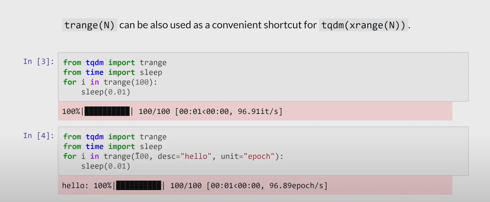
set fake reset to increase speed#
|
|
metadata yaml example#
|
|
test_submission.py#
|
|
Winner model’s code#
Recall the architecture#
 Only four inputs will be provided during testing time
Only four inputs will be provided during testing time
- Visual first person POV
- Chat
- inventory (agent’s bag)
- compass
Project repository#
- data
store the augmented dataset "change colours or something" - kill.sh
kill process and then you can restart the game - ‘Target Predictor Training.ipynb’
chat info to grid info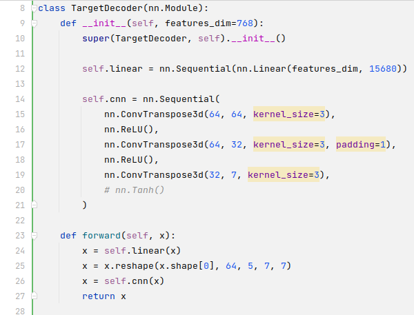
- Dataset_Augmentation.ipynb
mainly increase the training dataset by changing the colour info - models
store the network weights - ‘Training PPO All Tasks (visual pretrained AngelaCNN + CrossAttn 3) with 3 noops after placement and r -0.01.ipynb’
PPO RL algorithm - ‘Visual Autoencoder Training (IGLU).ipynb’
autoencoder training to get latent representation of visual input- they use pytorch and wandb
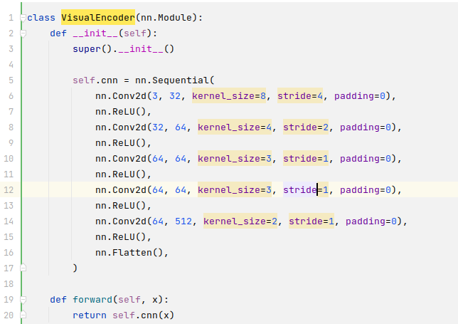
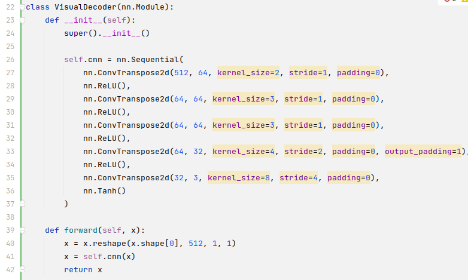
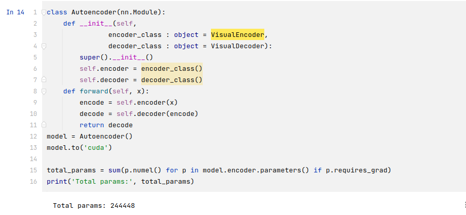
- research
- algorithm.py
- models.py
- train.py
- wrapper.py
- ‘Images Generation From IGLU.ipynb’
- submission
- custom_agent.py
PPO trainner in rllib - Dockerimage
docker image - metadata
metadata - model.py
model architecture codes - requirements.txt
- target_decoder.pth
targetdecoder weight - test_submission.py
just test_submission - wrappers.py
normal wrapper
- custom_agent.py
- wrappers_2.py
iglu training dataset#
-
the iglu python package would automatically download dataset to
~/.iglu/data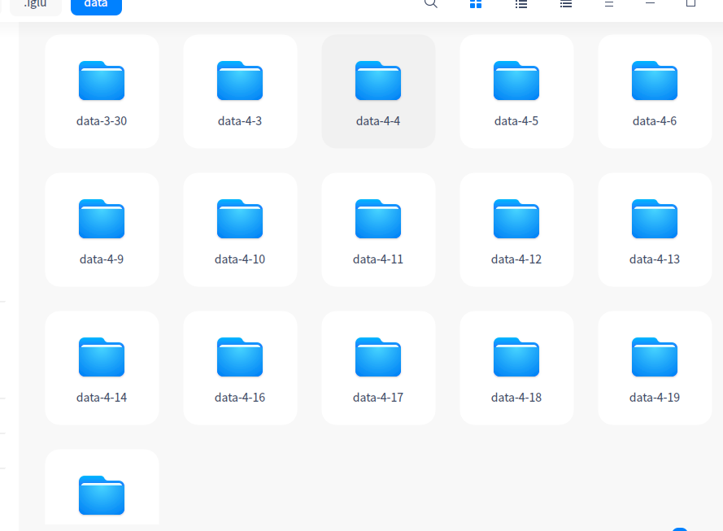
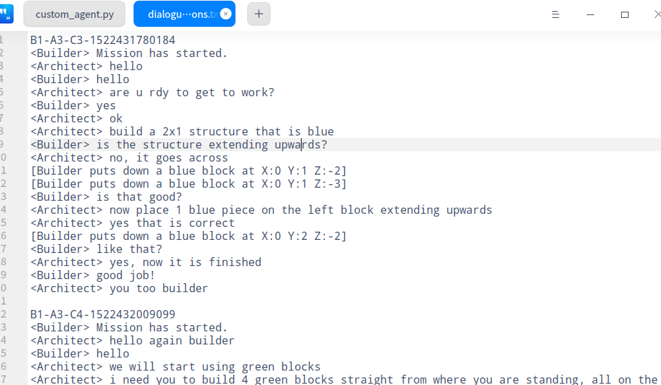
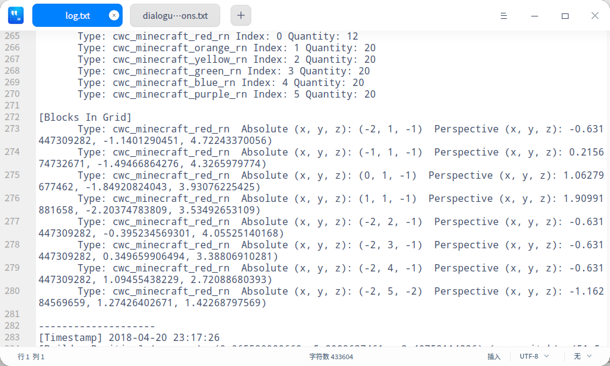
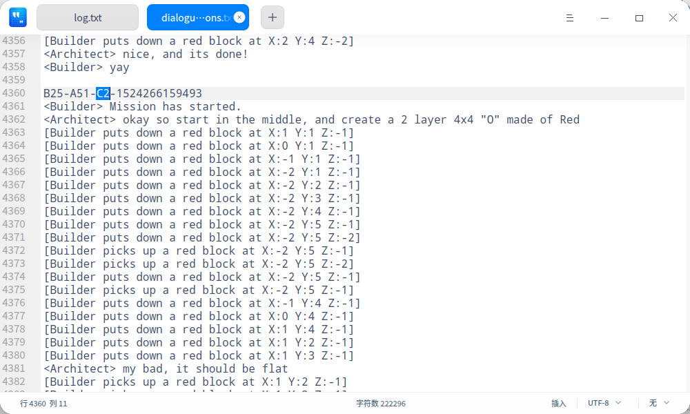
The TaskSet and task are
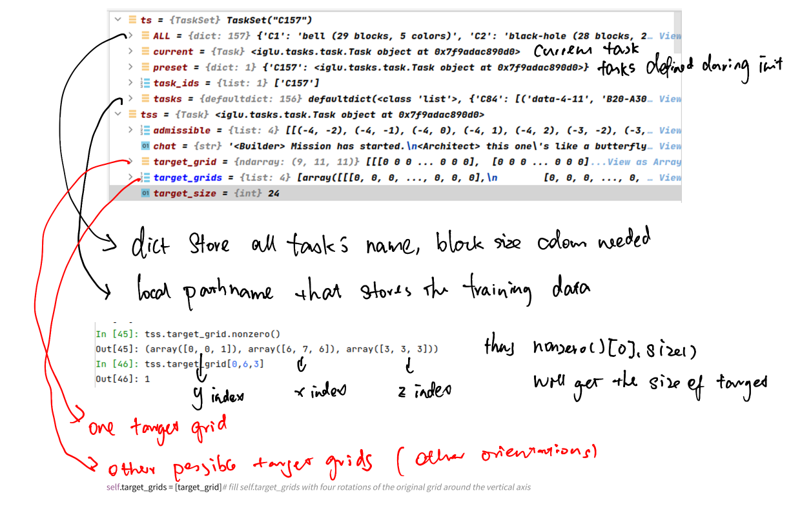
proposed model#
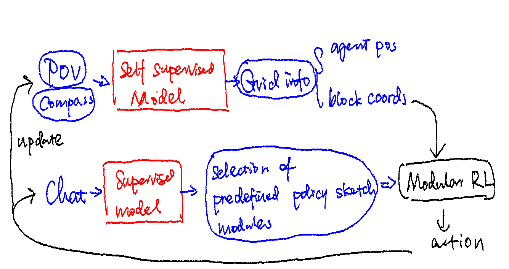
Paper Reading Notes#
-
Language in a (Search) Box: Grounding Language Learning in Real-World Human-Machine Interaction
- Author: Federico Bianchi
- Publish Year: 2021
- Review Date: Jan 2022
-
BABYAI++: Towards Grounded-Language Learning Beyond Memorization
- Author: Tianshi Cao et. al.
- Publish Year: 2020 ICLR
- Review Date: Jan 2022